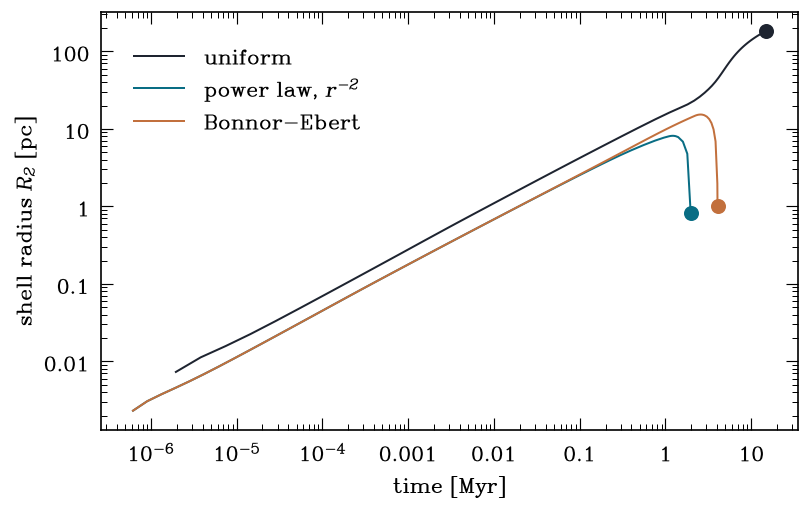
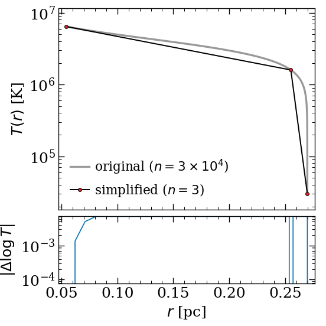
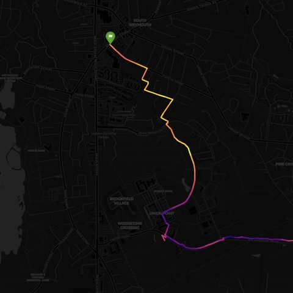
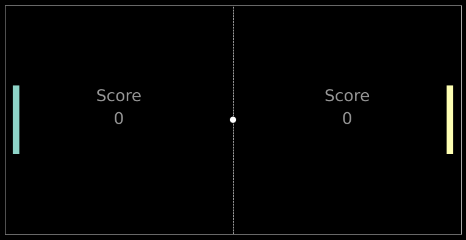
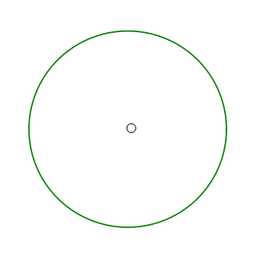

TRINITY is a one-dimensional code for modelling how stellar feedback drives expanding bubbles inside molecular clouds. Given a cloud’s mass, density profile, star-formation efficiency and surrounding conditions, it follows the radius, velocity, thermal state and forces acting on the expanding shell. It can model whether the cloud is dispersed or the shell stalls and eventually collapses again.
Written in Python and released under GPL v3.

astrosimplify reduces the number of points in one‑dimensional data without losing important features, such as sharp transitions, peaks and troughs. I made it for working with astrophysical profiles, including radial density and temperature distributions, stellar tracks and spectra. It only requires NumPy and is released under the MIT licence.
Small things I wrote while teaching myself Python, 2022–2023.

gpx_vis 2023 Turns GPX tracks into interactive elevation maps GELATO 2022 A terminal quiz for German articles and verbs
BallGame 2022 A self-playing Pong screensaver, in matplotlib
BounceGame 2022 A ball bouncing in a circle under gravity and air resistance, in matplotlib